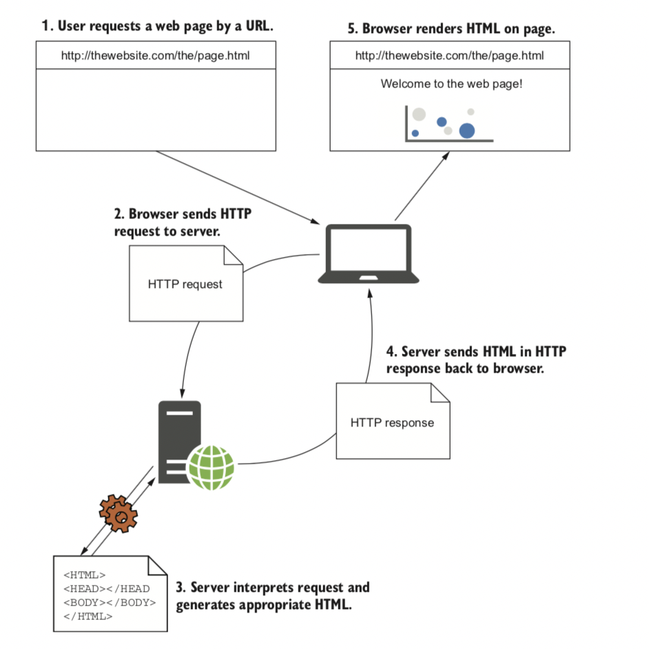

封面
.NET Core 命令列界面
一、开始ASP.NET Core
1.1 ASP.NET Core简介
1.1.1 使用Web框架
1.1.2 ASP.NET的优点和局限性
1.1.3 什么是ASP.NET Core
1.2 何时选择ASP.NET Core
1.2.1您可以构建哪种类型的应用程序
1.2.2如果您是刚接触.NET开发
1.2.3如果您是一个.NET Framework开发人员，正在创建一个新的应用程序
1.2.4将现有的ASP.NET应用程序转换为ASP.NET Core
1.3 ASP.NET Core如何运行
Published with GitBook
1.3 ASP.NET Core如何运行

results matching "
"
No results matching "
"